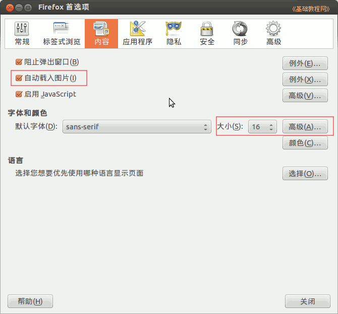

，打开火狐浏览器窗口，在地址栏输入一个网址，点右边的转到按钮就可以上网；
，打开火狐浏览器窗口，在地址栏输入一个网址，点右边的转到按钮就可以上网；Ubuntu 入门操作指南
作者：TeliuTe 来源：基础教程网
六、火狐浏览器 返回目录 下一课左侧快速启动栏里第二个图标是火狐浏览器，用来上网浏览网页；
1、火狐浏览器
1）点击左侧栏上的火狐按钮，打开火狐浏览器窗口，在地址栏输入一个网址，点右边的转到按钮就可以上网；
2）在屏幕最上边点菜单“编辑－首选项”，出来设置面板，；
3）在常规标签中设置主页和选中“总是询问下载位置”，主页就是自己经常访问的网页；
4）点上边的“标签式浏览”标签，去掉第二个“关闭多个标签时警告”的勾，再勾上最下边的“在新标签打开时，立即切换”；

5）再点到上边的“内容”标签里，网速太慢时可以去掉“自动载入图片”的勾，网页文字太小可以设置中间的文字“大小”和“高级”中的最小字体大小；

6）在隐私标签中，可以删除访问的历史记录，和清除cookie；
7）在安全标签中，去掉“记住网站密码的勾，这样就不会每次出来密码保存提示；
8）在”高级“中可以设置更新和其他选项，根据自己的要求来选择；
9）更多操作帮助，请参阅：http://teliute.org/mix/firefox/index.html
下载火狐程序和相关语言包：ftp://ftp.mozilla.org/pub/mozilla.org/firefox/releases/
本节学习了火狐浏览器的基础知识，如果你成功地完成了练习，请继续学习下一课内容；
本教程由86团学校TeliuTe制作|著作权所有
基础教程网：http://teliute.org/
美丽的校园……
转载和引用本站内容，请保留作者和本站链接。